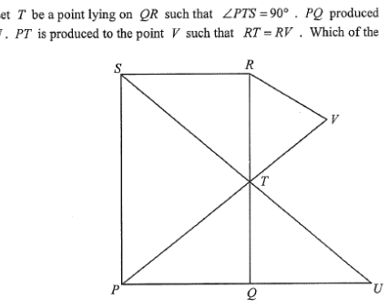

[2023 MC #21] In the figure, \(PQRS\) is a rectangle. Let \(T\) be a point lying on \(QR\) such that \(\angle PTS = 90^\circ\). \(PQ\) produced and \(ST\) produced meet at the point \(U\). \(PT\) is produced to the point \(V\) such that \(RT = RV\).
Which of the following must be true?

\(PQRS\) is a rectangle, so
\[ PS // QR \quad\text{and}\quad PQ // SR,\qquad \angle PQR=\angle QRS=\angle RSP=\angle SPQ=90^\circ. \]
\(T\) lies on \(QR\) with \(\angle PTS = 90^\circ\). Side \(PQ\) is produced beyond \(Q\) to meet \(ST\) produced beyond \(T\) at \(U\).
Since \(QR\) is a straight line,
the angles on the same side of the straight line at \(T\) satisfy
\[ \angle PTQ + \angle PTS + \angle STR = 180^\circ \;\Longrightarrow\; \angle PTQ + \angle STR = 90^\circ. \]
\(V\) lies on \(PT\) produced, so \(\angle STV = \angle PTS = 90^\circ\) (vertically opposite / straight line).
If \(RT=RV\),
then in the isosceles triangle \(RTV\),
\[ \angle RTV=\angle RV T=\frac{180^\circ-\angle TRV}{2}=90^\circ-\frac{\angle TRV}{2}<90^\circ. \]
But \(\angle STV = 90^\circ\). If \(RV // ST\),
the consecutive interior angles \(\angle STV + \angle RVT\) would equal \(180^\circ\), i.e. \(90^\circ + \angle RVT = 180^\circ\),
giving \(\angle RVT = 90^\circ\) — which contradicts \(\angle RVT < 90^\circ\).
So \(RV\) and \(ST\) are not parallel — option A is false.
(Alternatively,
the reflection/symmetry argument shows \(S\), \(T\), \(U\), \(P\), \(V\) lie in a different direction from \(RV\).)
Suppose \(\angle PTQ = \angle RTS = x\). Since \(\angle PTQ + \angle RTS = 90^\circ\), we get \(x = 45^\circ\).
In the right-angled \(\triangle PQT\) (right angle at \(Q\)):
\[ QT = \frac{PQ}{\tan 45^\circ} = PQ. \]
In the right-angled \(\triangle RST\) (right angle at \(S\)):
\[ RT = \frac{RS}{\tan 45^\circ} = RS = PQ. \]
Hence \(QR = QT + TR = PQ + PQ = 2PQ\),
which is only true for a special rectangle, not for a general one.
So option B is not necessarily true — false.
Since \(PQRS\) is a rectangle, \(PS // QR\). As \(T\) lies on \(QR\), \(PS // TQ\),
and \(ST\) gives corresponding angles:
\[ \angle PST = \angle UTQ \quad (\text{corresponding angles, } PS // QR). \]
Also,
both triangles have a right angle:
\[ \angle PTS = 90^\circ = \angle UQT \quad (\angle PTS = 90^\circ \text{ given, and } \angle UQT=\angle PQT=90^\circ). \]
Hence by the angle sum of a triangle,
\[ \angle SPT = \angle TUQ. \]
Therefore \(\triangle PST \sim \triangle UTQ\) (AAA).
Option C is true. ✔
Note: matching vertices are \(P\leftrightarrow U,\; S\leftrightarrow T,\; T\leftrightarrow Q\),
i.e. \(\triangle PST \sim \triangle UTQ\).
Suppose \(\triangle PQT \cong \triangle TRS\). Then corresponding sides are equal:
\[ PQ = TR \quad\text{and}\quad QT = RS. \]
Since \(RS = PQ\),
this forces \(TR = PQ\) and \(QT = PQ\), so
\[ QR = QT + TR = PQ + PQ = 2PQ. \]
This is again a special condition that does not hold for a general rectangle.
So option D is not necessarily true — false.
Conclusion
Only option C holds for every such rectangle:
\[ \triangle PST \sim \triangle UTQ \]
Answer: C
Question. In the figure, \(ABCD\) is a rectangle with \(AB=6\) and \(BC=13\). \(E\) is a point on \(BC\) such that \(\angle AED=90^\circ\). Prove that \(\triangle ABE\sim\triangle ECD\), and hence find \(BE\).